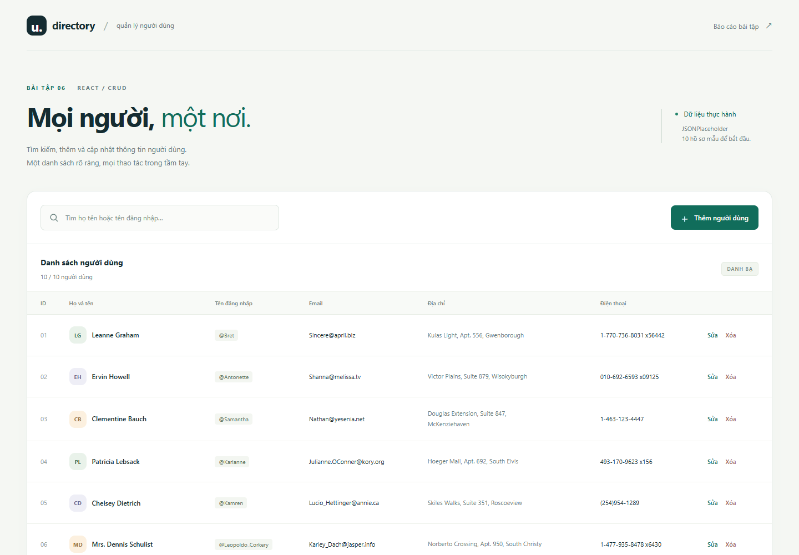

01 / CẤU TRÚC ỨNG DỤNG
Quản lý người dùng
với React CRUD.
Ứng dụng tải danh sách người dùng từ JSONPlaceholder, tìm theo họ tên hoặc tên đăng nhập, thêm người dùng, chỉnh sửa hồ sơ và xóa trực tiếp.
Sơ đồ cây Component
main.jsx gọi createRoot(...).render(<App />). Các input được tạo bằng hàm hỗ trợ renderFields(); hàm này không phải component riêng.
02 / STATE LIFTING
Chia sẻ state
qua component cha.
Vì sao đặt kw ở App?
SearchForm nhận thao tác nhập, còn ResultTable dùng từ khóa để lọc. Hai component là anh em nên không truyền state trực tiếp cho nhau. App là cha chung gần nhất: nhận giá trị qua onChangeValue, cập nhật kw, rồi truyền xuống bảng bằng prop keyword.
Vì sao đặt newUser ở App?
AddUser tạo hồ sơ nhưng danh sách nằm trong ResultTable. Khi gửi form hợp lệ, AddUser gọi onAdd; App cập nhật newUser và truyền qua prop user. Bảng thêm hồ sơ rồi gọi onAdded() để đặt lại newUser = null.
03 / PROPS VÀ XỬ LÝ DỮ LIỆU
Props từ App
xuống component con.
| Component | Prop / kiểu | Giá trị từ App & vai trò |
|---|---|---|
| SearchForm | onChangeValuefunction | setKeyword. Được gọi khi nhập để cập nhật từ khóa chung. |
| AddUser | onAddfunction | setNewUser. Nhận object hồ sơ sau khi form hợp lệ. |
| AddUser | pendingboolean | newUser !== null. Tạm khóa nút thêm khi hồ sơ trước đang chờ API tải xong. |
| ResultTable | keywordstring | kw. Lọc theo name hoặc username, không phân biệt hoa thường. |
| ResultTable | userobject | null | newUser. Hồ sơ mới chuyển từ AddUser qua App. |
| ResultTable | onAddedfunction | handleAdded. Callback ổn định bằng useCallback, đặt newUser về null sau khi thêm. |
Thực hiện CRUD
| Thao tác | Cách xử lý |
|---|---|
| Read | useEffect gọi fetch lấy 10 người dùng; hiển thị loading và có nút thử lại khi lỗi. |
| Create | Thêm object bằng [...prev, newUser]; cấp ID bằng ID lớn nhất hiện có cộng 1. |
| Update | Sao chép object và address khi mở form. Lưu bằng map; Hủy bỏ bản nháp, không sửa dữ liệu gốc. |
| Delete | Dùng filter loại dòng theo ID ngay khi bấm Xóa, không hỏi xác nhận. |
Effect tiếp nhận hồ sơ chỉ chạy khi dữ liệu ban đầu đã tải thành công. Vì vậy, hồ sơ thêm trong lúc đang tải không bị kết quả API ghi đè. onAdded xác nhận tiếp nhận và xóa hồ sơ chờ.
04 / LỖI ĐÃ TÁI HIỆN
Gọi setter
ngay khi render.
Khi kiểm tra đoạn nút Hủy ở trang 6 của tài liệu mẫu, em chạy lại cách gán onClick bên dưới và tái hiện lỗi:
Đoạn gây lỗi
<button onClick={setAdding(false)}>
Hủy
</button>Cách sửa
<button type="button"
onClick={() => setAdding(false)}>
Hủy
</button>Nguyên nhân: setAdding(false) thực thi trong lúc React render, thay vì đợi người dùng bấm. Setter yêu cầu render lại và lại bị gọi, tạo vòng lặp. Cần truyền một hàm callback cho onClick.
Áp dụng: nút Hủy dùng onClick={closeForm}. Hàm này đóng dialog; sự kiện onClose mới cập nhật state và xóa bản nháp. Lỗi mẫu được giữ trong kiểm thử riêng với assert.throws, không đưa vào ứng dụng đã deploy.
Kết quả kiểm tra
| Nhóm | Kết quả |
|---|---|
| Node tests | 5/5 đạt: lọc, sao chép địa chỉ, ID sau xóa, kiểm tra đầu vào và tái hiện lỗi mẫu. |
| Trình duyệt | 6/6 đạt: tìm kiếm, CRUD, hủy form, gửi khi đang tải, API lỗi/thử lại, responsive 390 px. |
| Dữ liệu API | Kiểm tra API thật, form và lỗi console trên bản đã host. Test tự động dùng dữ liệu giả lập để kết quả ổn định. |
Liên kết kết quả và nguồn tham khảo
Ứng dụng: oxm41.github.io/IT4409/assignment_6/
Báo cáo: oxm41.github.io/IT4409/assignment_6/report.html
Mã nguồn: GitHub / assignment_6/react-crud
Đề: Ex. React-CRUD - 20261.pdf, 8 trang. Tài liệu: Sharing State Between Components và Responding to Events. API: JSONPlaceholder /users.